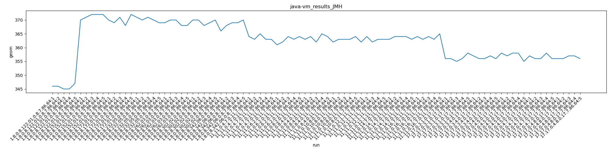
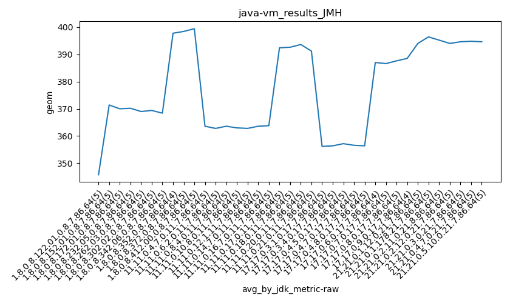
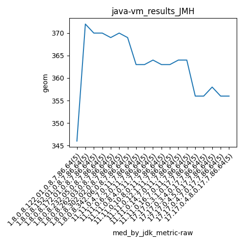
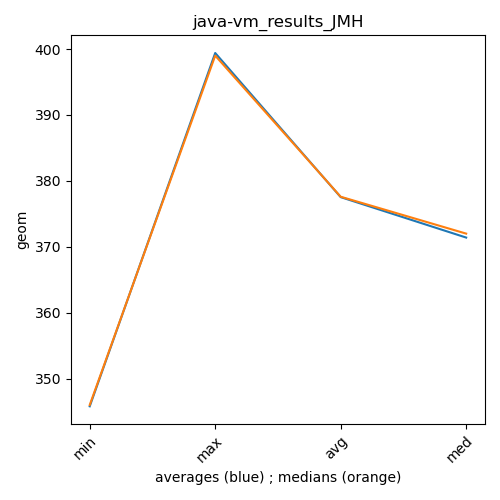

java- JMH
Context at bottom
/home/jvanek/git/benchmarks-in-nested-virtualisation-toolchain/final_results/vm_results/vm_results_RADARGUNs3
java-
JMH
/home/jvanek/git/benchmarks-in-nested-virtualisation-toolchain/final_results/vm_results/vm_results_RADARGUNs1
java-
JMH
/home/jvanek/git/benchmarks-in-nested-virtualisation-toolchain/final_results/vm_results/vm_results_DACAPO
java-
JMH
/home/jvanek/git/benchmarks-in-nested-virtualisation-toolchain/final_results/vm_results/vm_results_JMH
java-
JMH
vm_results_JMH
final score
Expected number of java- JDKs: 19
1st avgmed_alljdks_metric:
/home/jvanek/git/benchmarks-in-nested-virtualisation-toolchain/final_results/result_processing.py /home/jvanek/git/benchmarks-in-nested-virtualisation-toolchain/final_results/vm_results/vm_results_JMH geom False
values: [346, 346, 345, 345, 347, 370, 371, 372, 372, 372, 370, 369, 371, 368, 372, 371, 370, 371, 370, 369, 369, 370, 370, 368, 368, 370, 370, 368, 369, 370, 366, 368, 369, 369, 370, 364, 363, 365, 363, 363, 361, 362, 364, 363, 364, 363, 364, 362, 365, 364, 362, 363, 363, 363, 364, 362, 364, 362, 363, 363, 363, 364, 364, 364, 363, 364, 363, 364, 363, 365, 356, 356, 355, 356, 358, 357, 356, 356, 357, 356, 358, 357, 358, 358, 355, 357, 356, 356, 358, 356, 356, 356, 357, 357, 356]

Expected number of iterations: 5
final number of values: 95 out of 95
Pass rate: 100.0%
values: (345, 372, 362.6421052631579, 363)

** accuracy from all jdks and runs
more is better
MIN: 345
MAX: 372
AVG: 362.6421052631579
MED: 363
Relative differences 1:
MIN-MAX: 7.0 %
MIN-AVG: 5.0 %
MIN-MED: 5.0 %
MAX-MIN: -8.0 %
MAX-AVG: -3.0 %
MAX-MED: -2.0 %
AVG-MED: 0.0 %
stored to java-.properties. sort | uniq that!
2nd avgmed_by_jdk_metric:
values: [345.8, 371.4, 370.0, 370.2, 369.0, 369.4, 368.4, 363.6, 362.8, 363.6, 363.0, 362.8, 363.6, 363.8, 356.2, 356.4, 357.2, 356.6, 356.4]

values: [346, 372, 370, 370, 369, 370, 369, 363, 363, 364, 363, 363, 364, 364, 356, 356, 358, 356, 356]

values: (345.8, 371.4, 362.6421052631578, 363.6)
values: (346, 372, 362.7368421052632, 363)

** accuracy from all jdks where runs were avged
more is better
MIN: 345.8
MAX: 371.4
AVG: 362.6421052631578
MED: 363.6
Relative differences 1:
MIN-MAX: 7.0 %
MIN-AVG: 5.0 %
MIN-MED: 5.0 %
MAX-MIN: -7.0 %
MAX-AVG: -2.0 %
MAX-MED: -2.0 %
AVG-MED: 0.0 %
stored to java-.properties. sort | uniq that!
** accuracy from all jdks where runs were medianed
more is better
MIN: 346
MAX: 372
AVG: 362.7368421052632
MED: 363
Relative differences 1:
MIN-MAX: 7.0 %
MIN-AVG: 5.0 %
MIN-MED: 5.0 %
MAX-MIN: -8.0 %
MAX-AVG: -3.0 %
MAX-MED: -2.0 %
AVG-MED: 0.0 %
stored to java-.properties. sort | uniq that!
/home/jvanek/git/benchmarks-in-nested-virtualisation-toolchain/final_results/vm_results/vm_results_J2DBENCH
java-
JMH
/home/jvanek/git/benchmarks-in-nested-virtualisation-toolchain/final_results/vm_results/vm_results_SPECJBB
java-
JMH
pass rates:
vm_results_JMH=100.0%
Context:
- vm_results
- JMH